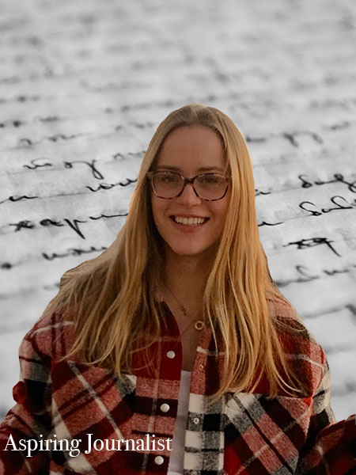

Abby Baughan's Biography
My name is Abby Baughan and I am a sophomore studying Magazine, News, and Digital Journalism at Syracuse University. I am interested in reporting on our campus community, specifically culture pieces such as upcoming concerts, new artists, and events. In my time here at Syracuse, I have developed a unique set of skills that would make me a great addition to many organizations. The past three semesters, I have made the Dean’s List in the S.I. Newhouse School of Public Communications. Additionally, I work for The Women’s Network as a blog writer and have written multiple articles for The Daily Orange in the past. With my graphic design and video courses, I gained experience with the following software:
- InDesign
- Illustrator
- Photoshop
- Premiere
Personal Information
Outside of my academics, I am a part of the SU Ski Race Club team. It is such a great way to pass the time with people during the cold winters here at SU. I also love to watch movies and read books. Some of my favorites are Harry Potter, Downton Abbey, Euphoria, and more. Growing up, I loved playing guitar and piano and try to play as often as I can when I am home. I also am one of four kids. I have a older brother, twin brother, and younger brother. I love surrounding myself with people who push me to do better, and my family continues to do that. All these things and more have shaped me into who I am today. Due to my skills gathered throughout my classes at Syracuse University, and the interests I have outside of school, I know I can be an asset to many organizations. I look forward to what the next chapter may bring.